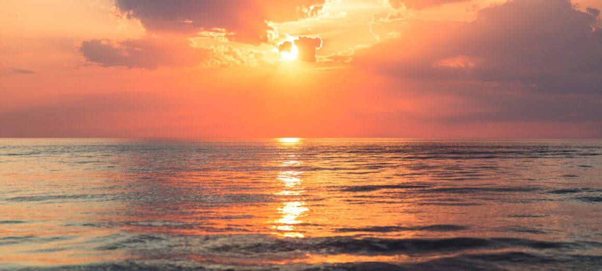
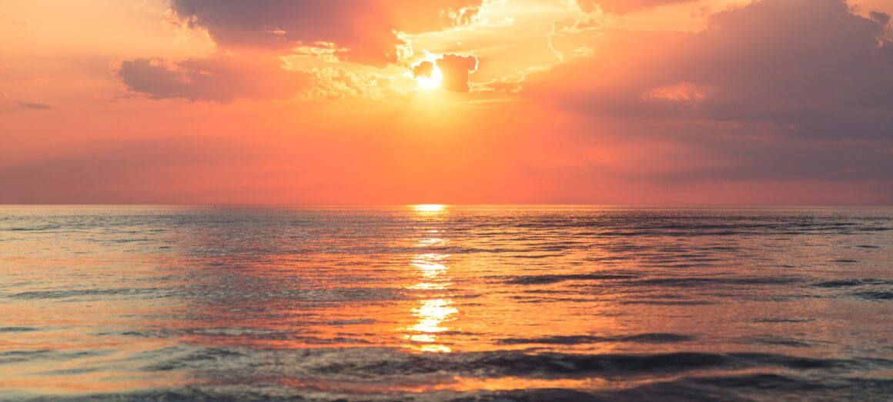

TAÇA 
"O Campeonato Brasileiro de Futebol, popularmente chamado Brasileirão, é a principal competição nacional disputada entre clubes. Atualmente, é dividida em quatro divisões: Séries A, B e C, com 20 times cada uma, e Série D, com 68." Veja mais sobre "Campeonato Brasileiro de Futebol"
 
